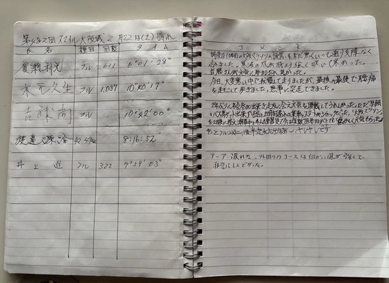

2025-02-22 04:30:36
2025年2月22日（土） 晴れ
| 名前 | 距離 | 回数 | タイム |
|---|---|---|---|
| 廣瀬 利光 | フル | 611回 | 6:01:28 |
| 井上 進 | フル | 322回 | 7:59:03 |
| 渡邉 源治 | 42.49km | 8:16:52 | |
| 木元 久生 | フル | 1,037回 | 10:40:17 |
| 吉藤 尚 | フル | 10:42:00 |
2月22日(土)猫の日に開催したスマイル大阪城です。
徳島から久しぶりに吉藤さんが参加されました。午前中は晴れで大勢のランナーが大阪マラソンの 練習か走っていました。
昼から曇り気温が下がり寒さで体が動かない。 皆さん寒い中頑張ってフル完走されました。 吉藤さんが遅くまでかかり心配でしたが無事帰られたので一安心でした。
